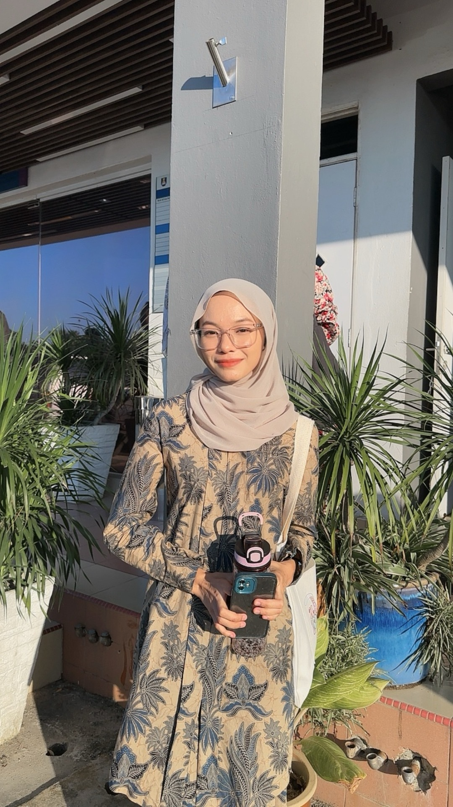

Biodata
Learn about my background. This is where you'll find the essence of who i am
STUDENT-DETAILS
Name: Wan Nurul Ainur Laila Binti Wan Azaman
Faculty: Faculty of Business and Management
Program: Bachelor of Business Administration(Hons.) Islamic Banking
Class: BA2494A
Course: Basic Web Design and Content Management(IMS456)
Prepared for: Sir Faizal Haini Bin Fadzil
PERSONAL DETAILS
Surname: Ainur
Date of birth: 14/09/2001
Gender: Female
Religion: Islam
Nationality: Malaysian
Email address: nurulainur09@gmail.com
Address: Lot1719 Kg Laut, 16040 Tumpat, Kelantan
Height: 153.5cm>
Weight: 42kg
DREAM AMBITION
From my early age, I've harboured a passion for finance and education, and my dream ambition is to bridge these 2 fields in a meaningful way. My journey begins in the world of banking, to aspire experience and knowledge. With this experience under my belt, I plan to transition into academia, becoming a lecturer who inspires and educates the next generation of students. Teaching has always been close to my heart, as it allows me to relive my student days and impart the wisdom I’ve gathered along the way.To look into the eyes of my students and see reflections of my own journey, the curiosity, and the drive that propelled me forward. Through my dual experiences in banking and education, I aim to equip my students with both practical knowledge and a passion for lifelong learning.
HOBBIES
I love watching TikTok videos, where I often stumble upon interesting facts and gain new knowledge. For outdoor activities, I cherish spending time in nature, soaking in the beauty of the natural world and finding peace in its tranquillity.